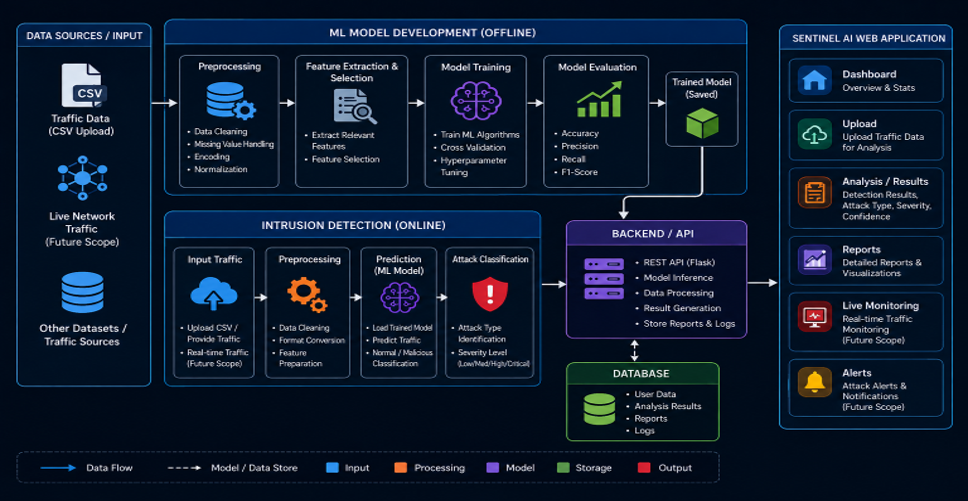
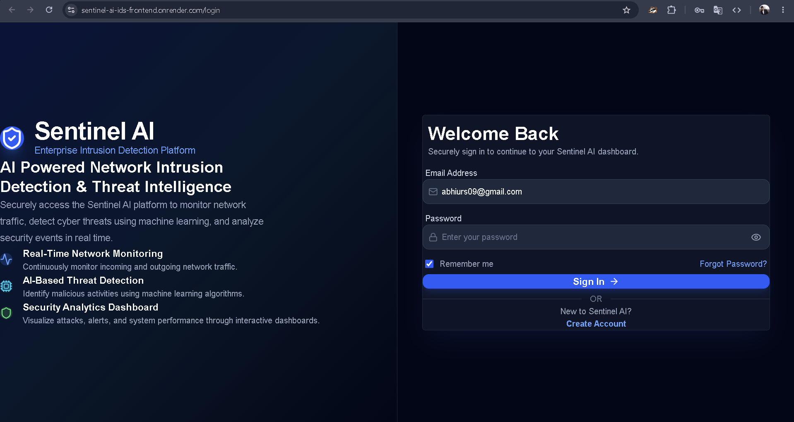
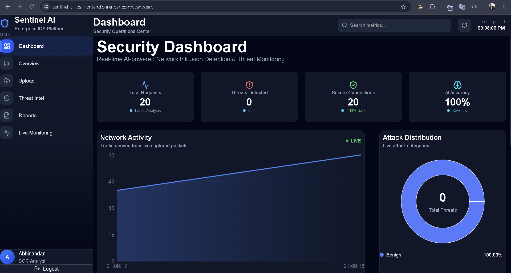
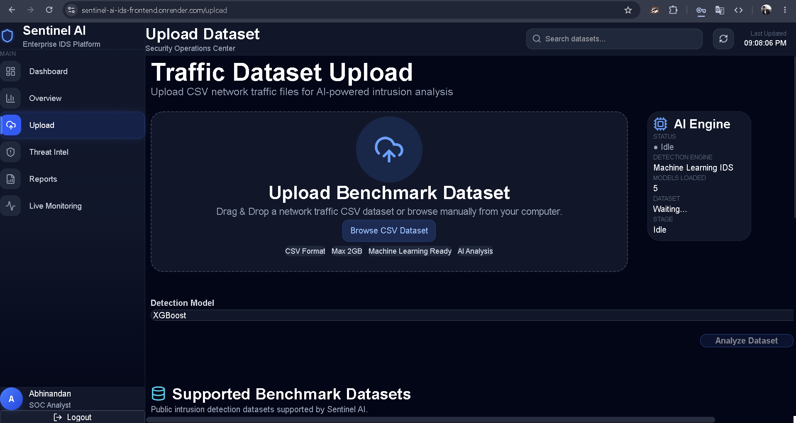
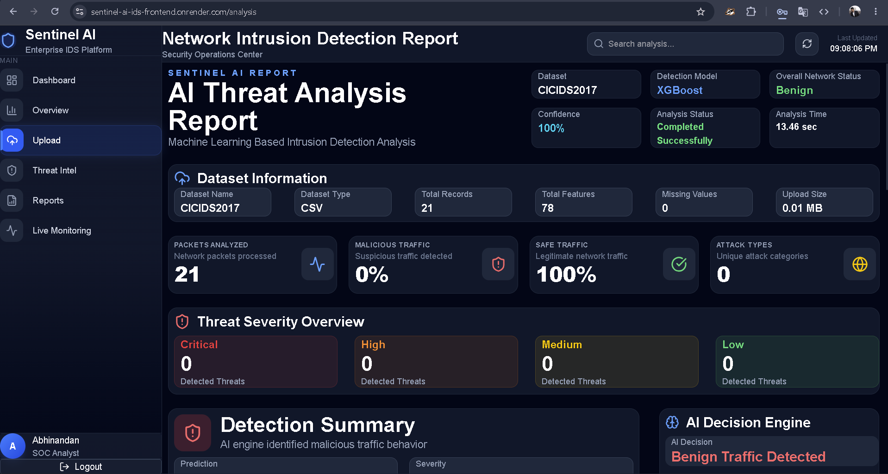
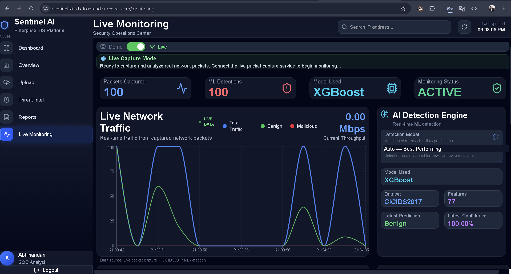

● Completed
AI-Driven Network Intrusion Detection System
An AI-powered intrusion detection system designed to analyze
network traffic, detect suspicious activities, and identify
potential cyber threats using machine learning techniques.
Python
Machine Learning
Cybersecurity
Network Security
Threat Detection
AI
Key Features
- Machine learning-based network intrusion detection
- Network traffic analysis and classification
- Detection of suspicious and malicious activities
- Multiple machine learning models for attack classification
- Interactive cybersecurity dashboard
- CSV-based network traffic analysis
Machine Learning Models
- Random Forest
- XGBoost
- Extra Trees
- K-Nearest Neighbors (KNN)
- Decision Tree
Datasets & Results
| Dataset |
Best Model |
Accuracy |
| CICIDS2017 |
XGBoost |
99.89% |
| CSE-CIC-IDS2018 |
XGBoost |
100% |
| NSL-KDD |
XGBoost |
99.70% |
| UNSW-NB15 |
XGBoost |
90.79% |
Accuracy values represent the best-performing model observed during
evaluation on each benchmark dataset.
Future Improvements
- Real-time dashboard integration
- Advanced ML model optimization
- Cloud deployment support
- Automated alerting system
- SIEM tool integration
System Architecture

Project Screenshots





View on GitHub